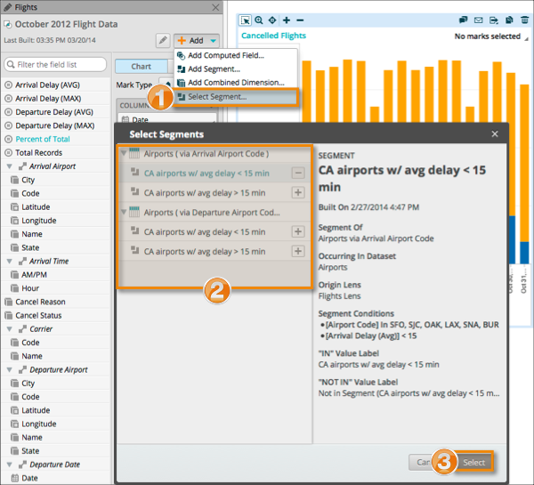

Segments can be added as a field to a lens in a vizboard that uses a dataset containing a defined segment. The available segments are listed. If the Select Segment menu is unavailable, no segment is available for the lens. When you add a segment field to a lens, it is added and made available to every viz in the vizboard that uses the same lens.

-
Click the
 icon for a segment to add it as a field to the lens in the vizboard.
(Optional) Click the
icon for a segment to add it as a field to the lens in the vizboard.
(Optional) Click the icon for a segment to remove it from the lens in the vizboard.
Note: Segments currently used in the viz are listed, but not capable of being removed.
icon for a segment to remove it from the lens in the vizboard.
Note: Segments currently used in the viz are listed, but not capable of being removed.